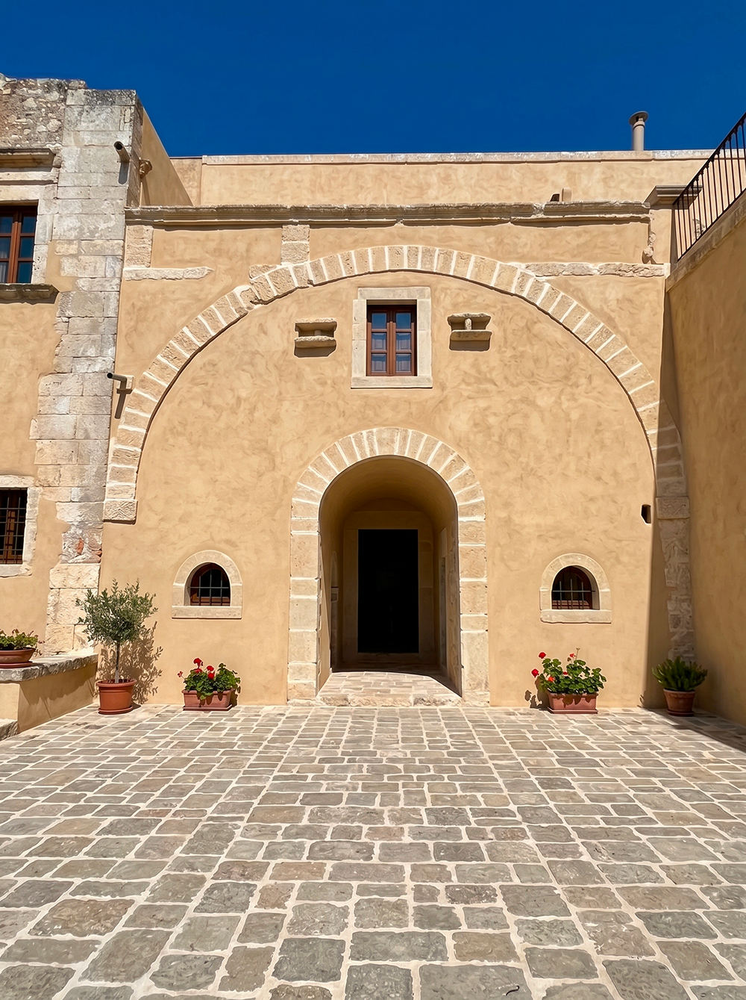

Il nostro progetto si sviluppa in modo graduale e consapevole, attraverso tre fasi distinte ma strettamente collegate. L’obiettivo è costruire qualcosa che possa durare nel tempo e generare valore per le persone che lo abitano.
Recupero e valorizzazione di una masseria storica del XVI secolo. Gli edifici vengono restaurati con attenzione alla tradizione costruttiva locale e trasformati in residenze di qualità, pensate per accogliere una comunità stabile.
Realizzazione di nuove abitazioni rurali e di spazi comuni, progettati in armonia con il paesaggio e con l’obiettivo di favorire la vita condivisa, il lavoro artigianale e le relazioni tra le famiglie.
Sviluppo di un modello che possa essere riproposto in altri contesti. L’esperienza maturata a Baglio San Michele vuole contribuire alla nascita di altre comunità fondate sugli stessi principi di lentezza, radicamento e responsabilità reciproca.
